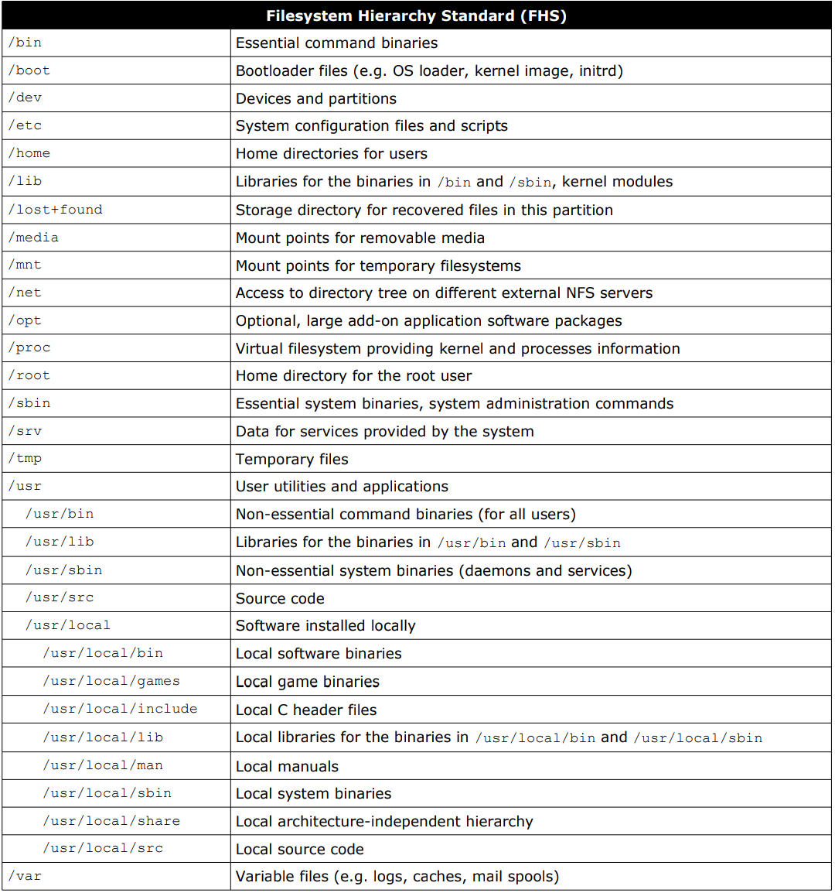

| Commands | Info |
|---|---|
!! or !$ |
repeat previous command |
![x] |
run xth command |
!-[x] |
run last xth command |
chroot |
run command/shell with special root dir |
clear |
clear screen |
exit |
exit terminal |
exit [x] |
exit terminal with exit status, where x>=0 |
history |
print command history |
history [x] |
print last x command history |
reset |
resets terminal mode |
sleep [x] |
sleep terminal for x s/m/h/d |
tty |
print file name of terminal connected to standard input |
| Commands | Info |
|---|---|
df |
print disk free space |
du |
print disk space usage |
hostid |
print numeric host identifier |
hostname |
print name of host system |
id -u |
print user id (0 is root user) |
kill [PID] |
kill process |
last reboot |
show system reboot history |
logout |
logout active user |
passwd |
change password of current user |
poweroff |
poweroff system |
ps |
print currently active process |
reboot |
reboot system |
shutdown |
shutdown system |
top |
print running processes interactively |
top -n [x] |
print only x page of running processes |
uname |
print system OS name |
uname -a |
print all system OS info |
uptime |
show current uptime |
users |
print all users on system |
w |
print who is logged-in and what running |
whereis [command] |
print possible location of command |
who |
print all logged on users on system |
whoami |
print current user |
| Commands | Info |
|---|---|
arch |
print CPU architecture |
dmesg |
print detected hardware and boot messages |
free |
print free memory |
lsblk |
print block device information |
lspci |
print PCI devices |
lsusb |
print USB devices |
| Commands | Info |
|---|---|
dig |
Domain Information Groper (dig) used for retrieving information about DNS name servers |
ifconfig |
Interface Configuration (ifconfig) used to configure kernel-resident network interfaces |
ip |
show or manipulate routing, devices, and tunnels |
netstat |
displays various network related information such as network connections, routing tables, interface statistics, masquerade connections, multicast memberships etc |
nslookup [URL] |
Name Server Lookup (Nslookup) used for getting information from DNS server |
ping [URL|IP] |
Packet Internet Groper (ping) used to check network connectivity between host and server/host |
route |
used for showing or update IP/kernel routing table and to set up static routes to specific hosts or networks via interface |
traceroute [URL] |
prints route that packet takes to reach host |
| Commands | Info |
|---|---|
cat [file] |
show content of file |
cd - |
change to last dir & print path |
cd .. |
change to one level above current dir |
cd or cd ~ |
change to home dir |
cd [dir] |
change dir |
cp [source-path] [destin-path] |
copy file from source to destination |
cp -r [dir1] [dir2] |
copy folder & its content recursively |
file [file] |
print file type |
head [file] |
show first 10 lines of file |
head -[x] [file] |
show first x lines of file |
less [file] |
paging through content one screenful at time with enhancements |
link [file1] [file2] |
create hard link |
ln -s [/path/to/file] [/path/link] |
create symbolic/soft link to file |
locate [file] |
locate file by name |
ls |
list content of current dir (except hidden) |
ls -a |
list content of dir include hidden |
ls -l |
list detailed content of dir |
ls [dir] |
list content of dir |
mkdir [dir] |
create dir |
mkdir -p [dir1]/[dir2] |
create dir2 inside non-existed dir1 |
more [file] |
paging through content one screenful at time (it is primitive, use less instead) |
mv [source/old] [destin/new] |
rename OR move file/dir |
nl [file] |
print line no at each line |
pwd |
print current working dir (full path) |
rm [file] |
remove file |
rm -rf [file] |
remove empty/non-empty file & dir |
rmdir dir |
remove empty dir |
sort [file] |
display content in alphabetical sort |
stat [file] |
display file/file-system stats |
tac [file] |
show content in reverse by line |
tail [file] |
show last 10 lines of file |
tail -[x] [file] |
show last x lines of file |
touch [file] |
change modification and access time of file (create file if not exists) |
touch -c [file] |
modify access time if file exist but doesn`t create new file |
tree [dir] |
print directory tree |
uniq [file] |
print unique line from sorted file (suppress duplicate lines) |
wc [file] |
print line, word, byte counts |
wc -l [file] |
count no lines (m-char, c-byte, w-word) |
wget [file] |
download file (over network) |
which [command] |
show command full path on system |
Bash script is plain text file which contains series of commands which is executed in sequence.
.sh extension ie script.sh#!/bin/shScript must have executable permission.
./[script]
sh [script]
bash [script]
# show each command execution
bash -x [script]
var="hello"
var=12
month=“jan feb mar apr may”
echo $var
echo ${var}
unset var
readonly var
array=("I" "am" "Mandar" 007 )
read -a array
array[0]="hello"
echo ${array[0]}
echo ${#array[@]}
read [var]
read -p 'Username : ' [var]
read -sp 'Password : ' [var]
read -n [x] [var]
read -a [array]
echo "message"
echo -e "\n some text"
printf "some text"
| Operator | Operation |
|---|---|
+ |
addition |
- |
subtraction |
* |
multiplication |
/ |
division |
% |
modulus |
++ |
increment |
-- |
decrement |
Arithmetic operations should be in double braces: count=$((count+1))
| Operator | Operation |
|---|---|
! [expression] |
not |
[expression] || [expression] or [expression] -o [expression] |
or |
[expression] && [expression] or [expression] -a [expression] |
and |
| Operator | Operation |
|---|---|
[expression] -eq [expression] |
equal |
[expression] -ne [expression] |
not equal |
[expression] -gt [expression] |
greater than |
[expression] -lt [expression] |
less than |
[expression] -ge [expression] |
greater than or equal |
[expression] -le [expression] |
less than or equal |
Ex -
if [ 80 -gt 40 ]
then
echo "greater"
fi
| Operator | Operation |
|---|---|
[string1] = [string2] |
equal |
[string1] != [string2] |
not equal |
[string1] == [string2] |
equal for pattern matching |
-n [string] |
true if length of string is nonzero |
-z [string] |
true if length of string is zero |
Ex -
if [ "Hello" = "Hi" ]
then
echo "same"
else
echo "different"
fi
| Operator | Operation |
|---|---|
[string] > [string] |
left string is greater than right in alphabetical order |
[string] < [string] |
right string is greater than left string in alphabetical order |
| Operator | Operation |
|---|---|
-e [file] |
true if file exists |
-f [file] |
true if file exists and is regular file |
-d [file] |
true if file exists and is directory |
-c [file] |
true if file exists and is character file |
-b [file] |
true if file exists and is block file |
-r [file] |
true if file exists and read permission is granted |
-w [file] |
true if file exists and write permission is granted |
-x [file] |
true if file exists and execute permission is granted |
-s [file] |
true if size of file is greater than zero |
Ex -
if [ -f text.txt ]
then
echo "text.txt exists and it is regular file"
fi
( [expression] )[]| Var | Info |
|---|---|
${var} |
substitute value |
${var:-word} |
If var is null or unset, word is substituted for var. Value of var does not change |
${var:=word} |
If var is null or unset, var is set to value of word |
${var:?message} |
If var is null or unset, message is printed to standard error. This checks that variables are set correctly |
${var:+word} |
If var is set, word is substituted for var. Value of var does not change |
Syntax -
`[command]`
Ex -
# Example 1:
DATE=`date`
echo "Date is $DATE"
# # Example 2:
USERS=`who | wc -l`
echo "Logged in user are $USERS"
Syntax -
$([command])
Ex -
# Example 1:
echo "Today is $(date)"
# Example 2:
for i in $(cat file.txt)
do
echo "$i"
done
| Escape | Info |
|---|---|
\\ |
backslash |
\a |
alert (BEL) |
\b |
backspace |
\c |
suppress trailing newline |
\f |
form feed |
\n |
new line |
\r |
carriage return |
\t |
horizontal tab |
\v |
vertical tab |
Syntax -
if [ condition ]
then
#statement
fi
# with OR
if [ condition ] || [ condition ]
then
#statement
fi
# with AND
if [ condition ] && [ condition ]
then
#statement
fi
Ex -
if [ "$X" = "y" ] || [ "$X" = "Y" ]
then
echo "YES"
fi
Syntax -
if [ condition ]
then
#statement
else
#statement
fi
Ex -
if [ $name = "mandar" ]
then
echo "Hello BOSS"
else
echo "Who Are You?"
fi
Syntax -
If [ condition ]
then
#statement
elif [ condition ]
then
#statement
else
#statement
fi
Ex -
# Example 1
if [ $X -lt $Y ]
then
echo "X is less than Y"
elif [ $X -gt $Y ]
then
echo "X is greater than Y"
elif [ $X -eq $Y ]
then
echo "X is equal to Y"
fi
# Example 2
if [ $X -eq $Y ] && [ $X -eq $Z ]
then
echo "EQUILATERAL"
elif [ $X -eq $Y ] || [ $Y -eq $Z ] || [ $X -eq $Z ]
then
echo "ISOSCELES"
else
echo "SCALENE"
fi
Syntax -
case "$var" in
"case 1")
#statement
;;
"case 2")
#statement
;;
*)
#Default Statement
;;
esac
Syntax -
while [ condition ]
do
#statement
done
Ex -
# Example 1: print "hello" 5 times
count=0
while [ $count -lt 5 ]
do
echo "hello"
count=$((count+1))
done
# OR
count=0
while [ $count -lt 5 ]
do
echo "hello"
((count++))
done
# Example 2: print file content by line
cat file.txt | while read line
do
echo $line
done
# Example 3 - read while loop
while read line
do
echo $line
done < file.txt
# Example 4 - infinite loop
while true # 1 instead of true also works
do
echo "infinite loop"
done
# Example 5: infinite loop
while :
do
echo "infinite loop"
done
# Example 6: factorial
counter=$1
factorial=1
while [ $counter -gt 0 ]
do
factorial=$(( $factorial * $counter ))
counter=$(( $counter - 1 ))
done
echo $factorial
Syntax -
for var in expression
do
#statement
done
# 2nd Syntax:
for (( expr; expr; expr ))
do
#statement
done
Ex -
# Example 1: input array & print
read -a array
for i in ${array[@]}
do
echo "input is $i"
done
# Example 2
for i in 1 2 3 4 5
do
echo $i
done
# Example 3
for i in {1..25}
do
echo $i
done
# Example 4: increment by 2 from 0 to 10
for i in {0..10..2}
do
echo $i
done
# Example 5: increment by 2 from 0 to 20
for i in $(seq 0 2 20)
do
echo $i
done
# Example 6
for i in `seq 1 10`
do
echo $i
done
# Example 7: increment by 1 upto 5
for (( i=1; i<=5; i++ ))
do
echo $i
done
# Example 8: infinite loop
for (( ; ; ))
do
echo "infinite loop"
done
# Example 9 - create 10 copies of test.txt
for i in `seq 1 10`
do
cp test.txt "test_${i}.txt"
done
# OR single line format
for i in `seq 1 10`; do cp test.txt "test_${i}.txt"; done
# Example 10: reading file
for line in $(cat test.txt); do
echo $line
done
Executes until the condition is false.
Syntax -
until [ condition ]
do
#statement
done
Ex -
count=3
until [ $count -le 0 ]
do
count=$((count-1))
echo "count = $count"
sleep 1
done
Syntax -
select VAR in expressions
do
#statements
done
Ex -
select DRINK in tea cofee water juice appe all none
do
case $DRINK in
tea|cofee|water|all)
echo "Go to canteen"
;;
juice|appe)
echo "Available at home"
;;
none)
break
;;
*)
echo "ERROR: Invalid selection"
;;
esac
done
1. Break Statement -
a=0
while [ $a -lt 10 ]
do
echo $a
if [ $a -eq 5 ]
then
break
fi
a=`expr $a + 1`
done
2. Continue Statement -
NUMS="1 2 3 4 5 6 7"
for NUM in $NUMS
do
Q=`expr $NUM % 2`
if [ $Q -eq 0 ]
then
echo "Number is an even number!!"
continue
fi
echo "Found odd number"
done
function(){
#statements
}
greet(){
echo "Hello World"
}
greet
greet(){
echo "Hello $1"
}
greet Mandar
greet(){
echo "Hello World"
}
echo $(greet)
echo `greet`
Also called as shell script parameters.
| Arguments | Info |
|---|---|
$0 |
name of script |
basename $0 |
returns name of script without leading path |
$[x] |
arguments pass to script/function |
$# |
total number of arguments passed |
$$ |
PID of shell where script executing |
$! |
process number of background that was executed last |
$? |
exit status of last command/script executed (0 for success and 1 for failure) |
$_ |
command which is being executed previously |
$∗ |
returns all the arguments (stored in single string) |
$@ |
same as $∗, but differ when enclosed in ("), (stored as array) |
$- |
print the current options flags |
| Commands | info |
|---|---|
[command] > [file] |
redirect output (STDOUT) to file |
[command] 1> [file] |
same as above, redirect STDOUT (its default file descriptor) |
[command] 2> [file] |
redirect standard error (STDERR) to file |
[command] &> [file] |
redirect STDOUT and STDERR to file |
[command] > [file] 2>&1 |
same as above (redirect STDOUT and STDERR) |
[command] >> [file] |
redirect & append output (STDOUT) to file |
[command] > /dev/null |
redirect STDOUT to null (discard STDOUT) |
[command] &> /dev/null |
redirect STDOUT & STDERR to null (discard STDOUT and STDERR) |
echo > [file] |
create empty file |
> [file] |
create empty file |
cat > [file] |
create file - press CTRL+C to exit typing |
NOTE :
/dev/null is a special device everything redirects to it is completely lost.exec x<> [file][command] >&xexec x>&-Ex -
$ exec 3<> log.txt
$ echo "Hello" >&3 #output is redirect to log.txt
$ cat log.txt
Hello
$ exec 3>&-
Pipelines or pipes are used as a funnel to pass the output of one command to another command as input or parameter.
[command] | [command]
Ex -
# Output 1 page at time -
ls -iR | less
# Display 10 rows -
ls -it | head -10
# Print line matched word "hello" in file.txt -
cat file.txt | grep hello
# Sort output file names and print only unique file names -
grep -l int *.cpp | sort | uniq
Redefine aliases by assigning commands to words or short-names as substitutions or short-cuts.
alias short-name='[command]'
save aliases in .bashrc file (in home dir) & execute file with -
source .bashrc
Ex -
alias repo='cd /document/github/repo'
echo {1,2,3} : 1 2 3echo {1..3} : 1 2 3echo {1..-3} : 1 0 -1 -2 -3echo {A..D} : A B C Decho a{2..5}b : a2b a3b a4b a5becho a, b, c, d{1..3}, e : a, b, c, d1, d2, d3, eRegular expressions for pattern matching.
grep ^The file.txt : print line start with "The"grep The^ file.txt : print line end with "The"grep [Hh]ello file.txt : match for "Hello" or "hello" and print foundls file[0-9] - file1 file5 : print all with name file[0 to 9]grep '[0-9][0-9][0-9][0-9]' file.txt : match for 4 digit number from file.txt with range 0-9ls *[0-9]* - file1.txt test2.sh note5.pdf test_20 : print all with contain no 0 to 9ls test.* - test.txt test.pdf : print all start with "test"ls ab* - ab.txt abcd abort.sh : print all start with "ab"ls {*.pdf,*.doc,*.exe} - file.txt project.doc run.exe : print all with extension pdf/doc/exels a[a-d]b - abd acd : print all with name betn a[a to d]bls test_[!3] - test test_2 test_4 : print all with any no except 3Global regular expression print (grep) prints lines that match patterns from text or files.
grep -option pattern [file]
grep hello file.txt : match for "hello" in file.txt and print foundgrep -i hello file.txt : match for "hello" in file.txt in insensitive waygrep -r hello file.txt : match for "hello" in file.txt recursivelygrep -v hello * : match for all folders & files which doesn`t have "hello"grep -c hello file.txt : count no of occurance of "hello" in file.txtgrep -w hello file.txt : match for "hello" in file.txt and select only matched word linesgrep -n hello file.txt : match for "hello" in file.txt and print line number with matched linesgrep -l int *.cpp : suppress normal output of matched case and instead print name of each input file having match "int"grep -B 2 -A 3 hello file.txt : print before 2 lines and after 3 lines of matched casegrep -E -w 'hello|HELLO' file.txt : match for "hello" or "HELLO" in file.txt & w select only matched word lines, E will treat it as regexSearch for files in the directory hierarchy.
find path -option [file]
find /home/user/documents -name file.txt : find "file.txt" and is case sensitivefind . -iname file.txt : find "file.txt" and is case insensitivefind . -iname "*.cpp" : find files with ".cpp" extension and is case insensitivefind . -maxdepth 2 -iname "*.cpp" : find files with ".cpp" extension in 2 level depth only and is case insensitivefind . -not -iname "*.cpp" : find all files except with ".cpp" extension and is case insensitivefind / -mtime 10 : find files which modified within last 10 hoursfind / -atime 10 : find files whose access time is within last 10 hoursfind / -cmin 10 : find files which created within last 10 minEval is used to execute arguments as shell command.
eval [arg ..]
Ex -
CDDOC="cd Documents"
eval $CDDOC
Expr evaluates given expression and displays its corresponding output.
expr [OPTION] [EXPRESSION]
Ex -
# Example 1: expr 1 + 2 # Example 2: expr 2 /* 3 # Example 3: read X read Y sum=`expr $X + $Y` echo "Sum = $sum" # Example 4: matching numbers with '=' (0=false & 1=true) res=`expr $x = $y` echo
$res # Example 5: displays 1 when arg1 is less than arg2 res=`expr $x \< $y` echo $res # Example 6: display 1 when arg1 is not equal to arg2 res=`expr $x \!= $y` echo $res # Example 7: OR operation $expr length
"geekss" "<" 5 "|" 19 - 6 ">" 10 # Example 8: Finding length of string x=geeks len=`expr length $x` echo $len # Example 9: Finding substring of string x=geeks sub=`expr
substr $x 2 3` #extract 3 characters starting from index 2 echo $su # Example 10: Check the index of character a=linuxhint b=`expr index $a t` echo $b
Change/Modify file permissions.
chmod user+permission [file]
chmod -R user+permission [file]
-rwx r-- r--
| Options | Description |
|---|---|
| file type | - (regular file), d (dir), c (block device), l (symbolic link) |
| setting permission | + (add), - (remove), = (assign) |
| permission | r (read), w (write), x (execute), - (no permission) |
| owner | u (user), g (group), o (other), a (all three) |
| Permission | Value |
|---|---|
| r | 4 |
| w | 2 |
| x | 1 |
| - | 0 |
| Permission Value | Permission | Info |
|---|---|---|
| 7 | rwx | read, write & execute |
| 6 | rw- | read & write |
| 5 | r-x | read & execute |
| 4 | r-- | read-only |
| 3 | -wx | write & execute |
| 2 | -w- | write only |
| 1 | --x | execute only |
| 0 | --- | none |
Note: max value is r+w+x = 4+2+1 = 7
Ex -
chmod u+wr-r text.txt
chmod o+wrx script.sh
# Using Numbers -
chmod 777 file.sh
